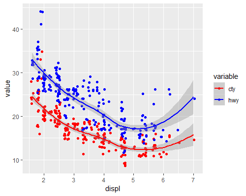
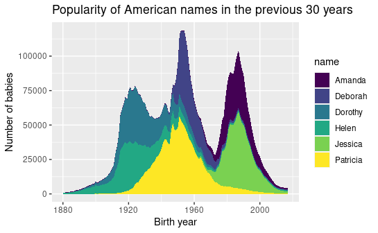
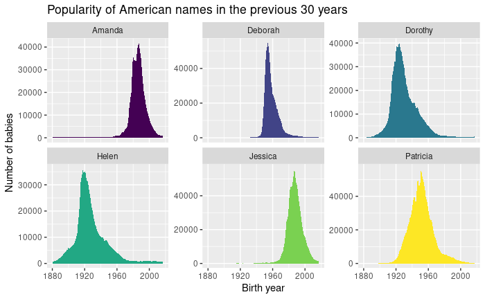

Chapter 4 ggplot2 for data visualization
본 장에서는 ggplot2( https://ggplot2.tidyverse.org/ )를 이용한 시각화에 대해서 알아봅니다. 데이터를 분석할 때 실제 데이터를 눈으로 확인하는 것은 중요합니다. 가능하면 raw 데이터를 보면서 크기 비교나 분포를 대략적으로 예측한다면 tool을 사용해서 나오는 결과를 가늠하는 척도가 될 수도 있습니다. ggplot2 는 Rstudio 개발팀의 해들리위컴이 (Hadley Wickham) 중심이 되어 만든 데이터 시각화 패키지입니다. 몇 가지 새로운 규칙을 학습해야 하지만 그 활용성이나 성능을 고려한다면 꼭 배워야할 패키지 중 하나입니다.
4.1 Basics
iris 데이터를 이용해서 간단하게 barplot을 그려봅니다. iris 데이터는 3가지 품종별 꽃잎과 꽃받침의 길이와 넓이를 측정한 데이터 입니다. 다음은 꽃잎의 길이와 넓이의 관계를 볼 수 있는 산점도 입니다.
library(ggplot2)
head(iris)
ggplot(data=iris) +
geom_point(mapping=aes(x=Petal.Length, y=Petal.Width))눈에 띄이는 부분은 +를 이용한 레이어들의 연결입니다. ggplot() 함수 뒤에 다양한 레이어들을 연결할 수 있고 geom_point() 함수는 지정한 위치에 산점도 레이어를 추가하는 기능을 합니다. 각 레이어들은 다음과 같은 다양한 기능을 갖는 함수들로 구성될 수 있습니다.
- 데이터 지정 (ggplot)
- 색상, 크기, x축의 값, y축의 값 등 심미적 요소 지정 (aes)
- 점, 선, 면 등 기하학적 요소 지정 (geoms)
- 그릴 통계량 지정 (stats)
- 테마, 스케일 지정 (theme)
일반적으로 ggplot을 이용하여 그래프를 그리는 순서는 다음과 같습니다.
- 어떤 그래프를 그릴지 결정
- ggplot의 데이터셋과 aesthetic 설정
- geometric 요소와 적절한 statistics를 설정한 레이어 추가
- 스케일과 테마를 설정한 레이어 추가
ggplot만을 실행할 경우 데이터와 x, y 축만 지정한 상태로 어떤 그래프 (히스토그램인지, 산포도인지 등)를 그릴지 명시되어 있지 않아서 아무것도 그리지 않은 상태의 빈 켄버스만 그려지게 되며 geom_point() 함수를 즉, 점을 그릴지 선을 그릴지 어떤 통계량을 그릴지 아니면 값 자체를 그릴지 등을 지정해 주고 나서야 비로서 그래프가 그려집니다.
ggplot(data=iris, mapping=aes(x=Petal.Length, y=Petal.Width))
?ggplot
ggplot(iris, aes(x=Petal.Length, y=Petal.Width))
ggplot(iris, aes(x=Petal.Length, y=Petal.Width)) + geom_point()geom_point()의 도움말을 보면 다음과 같이 data, mapping, stat 등의 파라메터들이 있습니다. 이는 ggplot함수에서 설정한 data나 mapping 정보를 geom_point에서 설정 하거나 완전히 다른 데이터를 x축과 y축에 그릴 수 있다는 뜻 이기도 합니다.
ggplot() +
geom_point(data=iris, mapping=aes(x=Petal.Length, y=Petal.Width)) 그런데 위 꽃잎의 길이와 넓이는 세 가지 다른 종류의 붓꽃에 대한 정보입니다. 따라서 각 종에 따라 다른 색이나 기호를 할당하는 것도 mapping에서 설정할 수 있습니다.
ggplot(iris, aes(x=Petal.Length,
y=Petal.Width,
color=Species,
shape=Species)) +
geom_point()
ggplot(iris, aes(x=Petal.Length, y=Petal.Width)) +
geom_point(aes(color=Species, shape=Species))위 산점도들의 stat은 identity 입니다. 즉, 따로 통계량을 계산할 필요 없이 값 그 자체를 사용하겠다는 것 입니다. 히스토그램의 경우 geom_bar() 함수로 막대그래프를 그릴 수 있습니다. geom_bar의 help페이지를 보면 stat="count"로 설정되어 있는 것을 알 수 있습니다. 꽃잎의 넓이에 대한 분포를 예로 구해봅니다. 히스토그램을 그릴경우 변수 한 개의 데이터만 필요하고 y축에는 자동으로 빈도수가 들어가게 되므로 aes에서 x만 mapping 해 주면 됩니다.
ggplot(iris, aes(x=Petal.Width)) +
geom_bar()4.2 Bar graph
ggplot을 이용한 막대그래프 그리는 방법에 대해서 좀 더 알아보겠습니다. 앞서와 같이 ggplot 함수로 먼저 데이터와 aes로 x축 y축 등을 명시하고 + 오퍼레이터를 사용하여 필요한 레이어를 차례로 추가하면서 그래프를 그릴 수 있습니다. geom_bar() 함수의 경우 x가 연속형일 경우는 아래와 같이 히스토그램을 그려주기 어렵습니다 (위 iris 예제에서 geom_bar() 그래프에서는 실제 꽃받침의 width 값은 연속형이 맞으나 관측된 iris 데이터들이 같은 값들이 많은 범주형처럼 되어 있어 히스토그램 그림이 그려졌습니다) 이럴 경우 stat을 bin으로 바꿔주면 해당 범위 안에 있는 값들의 빈도수를 계산하여 히스토그램을 그릴 수 있습니다.
dat <- data.frame(x1=rnorm(100))
ggplot(dat, aes(x=x1)) +
geom_bar()
ggplot(dat, aes(x=x1)) +
geom_bar(stat="bin", bins=30)x가 이산형인 경우는 stat을 디폴트 값인 count로 설정하여 해당 값들의 빈도수를 그려줄 수 있습니다. 이는 앞서 iris에서 배운 예제와 같습니다.
x1 <- sample(1:4, 100, replace = T)
dat <- data.frame(x=x1)
ggplot(dat, aes(x=x)) +
geom_bar(stat="count")이제 두 개의 변수가 있는 경우를 생각해 봅니다. 두 변수에 대해서 막대그래프를 그릴 경우 다음과 같이 Error: stat_count() must not be used with a y aesthetic. 에러가 발생할 수 있습니다.
x1 <- rnorm(10)
x2 <- rnorm(10)
dat <- data.frame(x1, x2)
ggplot(dat, aes(x=x1, y=x2)) +
geom_bar()이는 geom_bar()의 stat이 기본적으로 count로 설정되어 있으므로 생기는 에러 입니다. stat을 identity로 설정하면 x1값에 해당하는 x2값을 그려주는 막대 그래프를 그릴 수 있습니다. 참고로 이 그래프는 geom_point와 비슷한 정보를 보여 주게 됩니다.
x1 <- rnorm(10)
x2 <- rnorm(10)
dat <- data.frame(x1, x2)
ggplot(dat, aes(x=x1, y=x2)) +
geom_bar(stat="identity")
ggplot(dat, aes(x=x1, y=x2)) +
geom_point()다음과 같이 레이어를 추가하여 두 그래프를 같은 화면에 그릴 수도 있습니다. 여기서 col과 size는 aes함수안에서 쓰이지 않았음을 주의하시기 바랍니다. aes에서는 데이터와 특정 모양, 색깔을 mapping 해주는 역할을 하고 아래와 같이 지정해 줄 경우 데이터와 상관 없이 해당 레이어의 모든 그래프에 대해서 일괄적으로 적용되게 됩니다.
ggplot(dat, aes(x=x1, y=x2)) +
geom_bar(stat="identity") +
geom_point(col="red", size=5)또한 다음과 같이 다양한 레이어를 추가하여 필요한 기능을 사용할 수 있습니다. fill=x1 이라는 코드는 막대그래프의 색을 채울 때 x1에 따라서 다른 값들을 채우는 역할을 한다고 보면 되겠습니다.
x1 <- as.factor(1:3)
y1 <- tabulate(sample(x1, 100, replace=T))
dat <- data.frame(x1, y1)
ggplot(dat, aes(x=x1, y=y1, fill=x1)) +
geom_bar(stat="identity") +
guides(fill=FALSE) +
xlab("Discrete cases") +
ylab("Value") +
ylim(c(0,50))+
ggtitle("Bar graph for x:discrete and y:value")4.3 Line graph
다음으로 ggplot을 이용한 line graph를 그리는 방법을 알아 봅니다. Line graph는 geom_line이라는 함수를 사용해서 그릴 수 있으며 stat의 사용법은 앞서 bar graph와 같습니다.
x1 <- c(12, 21, 40)
x2 <- c(33, 10, 82)
dat <- data.frame(x1, x2)
ggplot(dat, aes(x1, x2)) +
geom_line()아래와 같이 그려지는 선의 두께를 조절하거나 레이어를 추가하는 방법으로 점을 추가로 그려볼 수 있습니다. fill의 경우 특정 도형에 채워지는 색을 의미합니다. 도형에 대한 자세한 종류는 ?pch 라는 도움말로 살펴보실 수 있습니다.
ggplot(dat, aes(x=x1, y=x2)) +
geom_line(size=2) +
geom_point(size=4, pch=21, fill="white") +
guides(fill=FALSE) +
ylim(c(0, 100)) +
xlab("Continuous cases") + ylab("Value") +
ggtitle("Line graph for x:continuous and y:continuous")위 경우는 x와 y가 모두 연속형 데이터일 경우 입니다. x는 이산형, y가 연속형일 경우 앞에서와 같이 bar graph를 이용하여 그래프를 그리게 됩니다. 그런데 이런 bar의 높이에 해당하는 값들을 서로 선으로 연결하고 싶은 경우가 있습니다. 이 때는 다음과 같이 aes의 group 이라는 파라미터를 설정하여 두 점 이상을 연결할 수 있습니다. 만약 group으로 나타낼 수 있는 변수가 없을 경우 group=1이라고 명시해 주고 선을 그릴 수 있으며 이 경우 모든 값들이 같은 1 그룹에 있는 것으로 간주됩니다. 1이라는 것은 하나의 예이며 어떤 숫자나 문자가 와도 괜찮습니다.
x1 <- as.factor(c(1:3))
y1 <- c(33, 10, 82)
dat <- data.frame(x1, y1)
str(dat)
ggplot(dat, aes(x=x1, y=y1, group=1)) +
geom_line(stat="identity") +
guides(fill=FALSE) +
xlab("Discrete cases") + ylab("Value") +
ylim(c(0,100))+
ggtitle("Line plot for x:discrete and y:continuous")위에서와 같은 방법으로 point와 bar 등을 같이 그려줄 수 있습니다.
ggplot(dat, aes(x=x1, y=y1, group=1)) +
geom_bar(stat="identity", fill=x1) +
geom_line(size=2) +
geom_point(size=4, pch=21, fill="white") +
guides(fill=FALSE) +
xlab("Discrete cases") + ylab("Value") +
ylim(c(0,100))+
ggtitle("Line for x:discrete and y:value")여기서는 fill 옵션이 geom_bar에 하나 geom_point에 하나씩 쓰였는데 geom_bar에서 사용된 fill은 bar에 채워지는 색을 x1의 값에 따라 바꾸겠다는 것을 의미하고 geom_point의 fill은 데이터에 상관 없이 모두 white로 채우라는 명령 입니다. 각 geometry에 따라서 필요한 옵션이 다르므로 각각의 geom_xxx를 사용할 때 상황에 맞게 사용하시면 되겠습니다.
4.4 Smoothing
산포도는 앞서와 같이 데이터를 점으로 표현한 그래프입니다. Smoothing은 관측된 데이터를 이용하여 모형을 추정하는데 사용되는 통계적 방법이며 이를 그래프로 표현하여 추세선을 그릴 수 있습니다. 예를 들어 몸무게와 키라는 두 변수의 관계를 알아보고자 할 때 산포도를 그리고 Smoothing을 통해 점들의 평균값을 이어주는 방법으로 모형을 추정하고 추세선을 그릴 수 있습니다.
mtcars 데이터는 1974년 미국 자동차 잡지에서 추출한 데이터로서 당시 다양한 모델의 자동차에대한 성능을 저장하고 있습니다 (?mtcars로 자세한 정보를 볼 수 있음). 이 데이터를 이용해서 연비와 마력 (horsepower) 두 변수의 관계를 그래프로 그려보겠습니다. 직관적으로 생각하면 두 변수는 반비례 할 것으로 기대됩니다. ggplot을 활용해서 두 변수의 산포도를 그리고 smoothing을 수행해 보도록 하겠습니다.
ggplot(mtcars, aes(x=mpg, y=hp)) +
geom_point()위와 같이 mtcars는 data.frame이므로 ggplot으로 바로 받아서 x축과 y축 mapping에 필요한 변수들 이름을 직접 할당하고 geom_point함수를 이용해서 간단히 산포도를 그릴 수 있습니다. 이 산포도만으로도 mpg와 hp 두 변수간의 관계가 역함수 관계임을 알 수 있고 또한 선형이 아닌 것도 알 수 있습니다. 이제 위 그림에 geom_smooth()함수를 이용해서 (모형) 적합 곡선 (또는 추세선)을 그려봅니다.
ggplot(mtcars, aes(x=mpg, y=hp)) +
geom_point() +
geom_smooth()간단히 geom_smooth() 한 줄을 추가하여 추세선을 그렸으며 경고 메세지에서 볼 수 있듯이 알고리즘은 loess 모형을 사용했고 공식은 (formula는) y~x로, 즉, y축 변수를 반응변수로 x축 변수를 설명변수로 설정하여 그려졌습니다. 직선의 공식 y=ax+b를 생각해 보시면 무슨 의미인지 이해가 더 쉬울듯 합니다. ?geom_smooth로 보면 알 수 있듯이 모형을 적합하는 알고리즘 옵션을 lm, glm, loess 등 다양하게 설정할 수 있으며 auto로 하게 되면 데이터의 크기나 형식에 맞춰서 방법을 자동으로 선택해서 그려주게 됩니다. se 옵션은 기본적으로 TRUE 값을 가지며 위 그림에서 볼 수 있는 선분 주위의 회색 구간으로 신뢰구간을 그려주는 옵션 입니다. span 옵션은 loess 모형의 smoothing 정도를 조절할 수 있는데 이는 직접 바꿔가면서 실습을 해보면 이해에 도움이 되겠습니다.
ggplot(mtcars, aes(x=mpg, y=hp)) +
geom_point() +
geom_smooth(se=FALSE, span=0.2)위와 같이 span 옵션을 작게 설정할 수록 관측된 데이터(점)에 선분(모형)이 가까이 붙게 됩니다. 이를 과대적합 (overfitting)이라고 하며 간단히 설명하면 관측된 데이터에만 너무 잘맞는 모형을 만드는 경우를 말합니다. 이럴 경우 새롭게 관측된 데이터는 모형의 예측값과 잘 맞지 않게 됩니다.
이번에는 모의 데이터를 생성해서 그래프를 그려보겠습니다. 네 개 학급에 있는 학생들의 키와 몸무게를 저장한 데이터를 만들어 봅니다. 이 경우 몇 개의 변수가 필요할지 생각해 보시기 바랍니다. 키와 몸무게 그리고 학급을 나타내는 변수 3개가 필요하며 키와 몸무게는 정수형, 그룹을 나타내는 변수는 문자형이나 factor형으로 나타내면 되겠습니다. 각 학급의 학생수는 50명으로 총 200명의 학생이 있는 것으로 하며 각 그룹별로 키나 몸무게의 차이는 없고 키가 큰 사람은 몸무게가 많이 나가는 것으로 합니다. 키와 몸무게 사이에는 다음과 같은 연관성을 만들어 줍니다. \(height= weight + N(100, 10)\)
weights <- rnorm(200, 75, 5)
heights <- weights + rnorm(200, 100, 5)
classes <- sample(c("A", "B", "C", "D"), size=length(heights), replace = T)
mydata <- data.frame(heights, weights, classes)
str(mydata)이제 위 데이터를 이용해서 몸무게와 키의 산포도와 추세선을 그려보고 추가로 그룹별로 다른 색의 점으로 표현해 보겠습니다.
ggplot(mydata, aes(x=weights, y=heights, color=classes)) +
geom_point() +
geom_smooth()그런데 위와 같은 코드를 실행하면 그룹마다 다른 점과 smooth 선분이 그려집니다. 우리가 원하는 그림은 단지 점만 그룹별로 다른 색으로 표현하고 추세선은 전체 학생들에 대해서 하나의 선분만 그려지길 원합니다. 이제 우리가 알아야할 부분은 각 레이어마다 mapping을 지정할 수 있다는 것이고 이 원리를 이해한다면 다음과 같이 geom_point에서는 color를 mapping해 주고 geom_smooth에서는 지정해주지 않으면 됩니다.
ggplot(mydata) +
geom_point(aes(x=weights, y=heights, color=classes)) +
geom_smooth(aes(x=weights, y=heights))그리고 중복되는 부분을 줄여줄 수도 있습니다. 즉, ggplot에서 지정하는 mapping은 하위 layer에 모두 적용이 되며 각 layer마다 다른 mapping 특성을 부여하고 싶을 경우 해당 layer의 mapping 함수 (aes)를 이용하여 설정할 수 있다는 점을 기억하시기 바랍니다.
ggplot(mydata, aes(x=weights, y=heights)) +
geom_point(aes(color=classes)) +
geom_smooth()4.5 Statstics and positions
앞서 smoothing 곡선은 실제 데이터에서 관측된 값이 아닌 계산된 값을 그래프에 표현한 것 입니다. 막대그래프에서도 y축 count 값은 관측된 값이 아닌 빈도수를 계산한 값이고 boxplot의 경우도 중간값 1,3사분위수 등 통계량을 표현해 주는 그래프 입니다. 이는 대부분 통계 분석용 소프트웨어에서 제공되는 기능으로 통계량을 가시화 해주는 역할을 합니다. ggplot2에서도 각 geom 레이어에 stat이라는 옵션을 통해 이러한 통계량을 그래프로 표현할 수 있습니다. 예를 들어 앞서 생성한 키, 몸무게 데이터에서 키의 분포를 보기 위한 히스토그램을 그리면 geom_histogram을 사용할 수 있고 이 레이어의 stat 옵션의 기본값은 "bin" 입니다 (?geom_histogram 참고).
library(tidyverse)
weights <- rnorm(200, 75, 5)
heights <- weights + rnorm(200, 100, 5)
classes <- sample(c("A", "B", "C", "D"), size=length(heights), replace = T)
mydata <- data.frame(heights, weights, classes)
str(mydata)
ggplot(mydata, aes(x=heights)) +
geom_histogram()경고 문구의 bins=30은 기본 stat옵션이 bin인데 bins옵션은 null로 되어 있기 때문에 경고가 발생한 것이고 30으로 강제 할당해서 그린다는 메세지 입니다. bins 옵션을 다르게 해서 테스트 해보시기 바랍니다. 또한 stat="identity"로 그래프를 그린 경우는 데이터 값을 그대로 그린다는 것도 다시 기억해 보시기 바랍니다.
ggplot(mydata, aes(x=heights)) +
geom_histogram(stat="identity")
ggplot(mydata, aes(x=heights, y=weights)) +
geom_histogram(stat="identity")또 다른 예를위해 앞서 키 몸무게 데이터에 혈액형 변수를 추가해 보겠습니다. 혈액형은 위 4개 학급에 관계 없이 A, B, O, AB 네 그룹으로 나눌 수 있으며 200명의 학생들에게 랜덤하게 할당하도록 합니다.
bloodtype <- sample(c("A", "B", "O", "AB"), nrow(mydata), replace=T)
mynewdata <- data.frame(mydata, bloodtype)
str(mynewdata)위와 같이 새로운 변수 bloodtype 이 factor형으로 추가되어 새로운 data.frame을 생성하도록 했습니다. 이제 각 학급별로 몇 명의 혈액형 타입을 갖는 학생들이 있는지를 막대그래프로 표현해 보도록 하겠습니다. 혈액형의 타입별로 다른 색으로 막대를 칠하도록 해봅니다. 막대그래프의 색은 fill옵션으로 채울수 있고 막대그래프는 geom_bar그리고 이 레이어의 stat은 기본값이 count이므로 따로 명시하지 않은채로 다음과 같이 코드를 작성할 수 있습니다.
ggplot(mynewdata, aes(x=classes, fill=bloodtype)) +
geom_bar()그런데 위와같이 그래프가 위로 쌓여서 보입니다. 이는 geom_bar의 position 기본값이 stack으로 되어있어서 보이는 현상입니다 (?geom_bar참고). 옆으로 나란히 막대를 위치시킨 후 크기를 비교하기 위해서 position="dodge"를 사용합니다. 또한 막대그래프에 칠해지는 색의 투명도를 alpha 옵션을 사용해 변경할 수 있습니다.
ggplot(mynewdata, aes(x=classes, fill=bloodtype)) +
geom_bar(alpha=0.5, position="dodge")다음과 같이 간단히 한 줄만 추가하여 위 막대그래프의 위치를 가로로 전환하거나 Coxcomb chart로 그릴수도 있습니다.
ggplot(mynewdata, aes(x=classes, fill=bloodtype)) +
geom_bar(position="dodge") +
coord_flip()ggplot(mynewdata, aes(x=classes, fill=bloodtype)) +
geom_bar(position="dodge") +
coord_polar()참고로 위 Coxcomb 그래프의 경우는 해석이 어렵거나 x, y축의 라벨링에 혼돈이 올수 있으니 정보 전달이 명확하도록 그래프의 옵션들을 추가하거나 용도에 맞게 사용할 필요가 있습니다.
4.6 Facets
산점도의 예에서 위와 같이 다른 색이나 모양으로 그리기 보다는 종 별로 다른 켄버스에 별도의 산점도를 그려야 할 경우가 있습니다. 이럴때 사용하는 함수가 facet_wrap()이나 facet_grid() 입니다. 보통 범주형 자료에 대해서 적용할 수 있으며 facet_wrap()은 하나의 변수에 대해서 그림을 나눠그릴때 사용하고 facet_grid()는 두 개 변수의 조합에 의한 그래프들을 그릴 때 사용합니다. 위 붓꽃 예에서는 3가지 종을 나타내는 변수 Species를 이용하면 되겠습니다. facet_wrap()함수에는 ~를 이용한 formula를 사용합니다.
ggplot(iris, aes(x=Petal.Length, y=Petal.Width)) +
geom_point(aes(color=Species, shape=Species)) +
facet_wrap(~Species, nrow=2)만약 두 개의 범주형 변수에 대해서 x, y축 각각으로 나누고 싶을 때는 facet_grid()를 사용할 수 있습니다. iris 데이터는 하나의 범주형 변수와 네 개의 숫자형 변수로 구성되어 있습니다 (str(iris) 확인). 여기에 랜덤하게 0과 1을 갖는 범주형 변수 하나를 추가해 보겠습니다.
str(iris)
mycate <- sample(c(0,1), nrow(iris), replace=T)
myiris <- data.frame(iris, mycate)
str(myiris)이제 mycate와 Species 두 범주형 변수에 대해서 facet 그래프를 그려보면 다음과 같습니다. facet_grid()함수를 사용하면 되며 x와 y축의 변수는 ~를 활용한 formula를 사용합니다. 즉 ~ 왼편의 변수는 y축 오른편의 변수는 x축으로 구성되어집니다. 새로운 myiris라는 데이터를 만들었으므로 iris 대신 myiris를 사용합니다.
ggplot(myiris, aes(x=Petal.Length, y=Petal.Width)) +
geom_point(aes(color=Species, shape=Species)) +
facet_grid(Species~mycate)만약 하나의 변수에 대해서 x축이나 y축 하나에만 나열하고 싶은 경우 다음처럼 . 을 사용하면 됩니다.
ggplot(myiris, aes(x=Petal.Length, y=Petal.Width)) +
geom_point(aes(color=Species, shape=Species)) +
facet_grid(.~mycate)
ggplot(myiris, aes(x=Petal.Length, y=Petal.Width)) +
geom_point(aes(color=Species, shape=Species)) +
facet_grid(Species~.)
ggplot(myiris, aes(x=Petal.Length, y=Petal.Width)) +
geom_point(aes(color=Species, shape=Species)) +
facet_grid(.~Species)4.6.1 Exercise
Orange 데이터셋은 다섯 그루의 오랜지 나무에 대한 시간에(age-days) 따른 성장을(circumference) 기록한 데이터임.
age와 circumference 를 각각 x와 y축으로 하는 산점도를 그리는 코드를 작성하시오 (ggplot 이용, 나무별로 다른 색 사용)
나무별로 다른 켄버스에 age와 circumference를 x와 y축으로 하는 산점도를 그리는 코드를 작성하시오 (ggplot, facet_grid이용)
2)에서 그려진 나무별 산점도에 다음과 같이 선분을 추가한 그래프를 그리는 코드를 작성 하시오
4.6.2 Exercise
InsectSprays는 제초제의 효능에 관한 데이터이다. 다음과 같은 plot을 그리는 코드를 작성 하시오
4.7 Themes, Labels, and Scales
Theme은 data관련 요소들 외의 것들에 대한 설정을 위해서 사용됩니다. 즉, 제목이나 라벨, 배경, 범례 등의 색, 위치, 크기, 모양 등을 설정하는데 사용합니다. 주의할 부분은 해당 택스트 등 데이터를 변경하는 것이 아니고 보여지는 모습만을 바꿀 수 있다는 것 입니다. 택스트 설정은 labs를 사용합니다. 예제를 가지고 몇 가지 실습을 해 보겠습니다. 먼저 labs라는 명령어로 x축, y축, Title 등을 설정할 수 있습니다. 참고로 xlab(), ylab() 등의 함수도 x축, y축 라벨을 설정하는데 사용될 수 있지만 여기서는 labs만을 사용하도록 합니다.
ggplot(mynewdata, aes(x=classes, fill=bloodtype)) +
geom_bar(position="dodge") +
labs(x='Four classes',
y='Number of students',
title='Blood type distribution',
subtitle = 'Blood type distribution from the 200 students',
fill='Blood Types') 위 코드에서 labs에서 설정할 수 있는 옵션은 title, subtitle과 x축, y축 라벨 그리고 범례의 title까지 가능합니다. 특히 ggplot 명령에서 aes(fill=bloodtype)이 사용되었으므로 범례의 title은 fill="Blood types"로 설정해야 하며 만약 aes(color=bloodtype)으로 사용되었을 경우에는 color="Blood types"으로 설정합니다. 참고로 범례의 label을 설정하는 방법은 다음과 같이 scale_fill_discrete 함수의 labels 옵션을 사용하면 됩니다. element_blank()는 택스트를 공백으로 설정할 때 사용합니다. 아래 나올 scale 관련 내용과 함께 이해하시면 좋습니다.
ggplot(mynewdata, aes(x=classes, fill=bloodtype)) +
geom_bar(position="dodge") +
scale_fill_discrete(name=element_blank(), labels=c("A type", "AB type", "B type", "O type"))이제 본격적으로 Theme으로 그래프를 장식해 보도록 합니다. Theme 관련된 옵션들은 https://ggplot2.tidyverse.org/reference/theme.html 이곳을 참고하시기 바랍니다. 여기서 mapping은 그대로인채로 모양 등의 설정을 바꿔가면서 그래프의 형태를 확인하는 작업이 반복되므로 다음과 같이 myplot이라는 변수에 기본이 되는 ggplot 코드를 저장하고 이후 + 연산자를 사용해서 옵션을 바꿔가며 편리하게 코드를 재사용 할 수도 있습니다.
myplot <- ggplot(mynewdata, aes(x=classes, fill=bloodtype)) +
geom_bar(position="dodge") +
labs(x='Four classes',
y='Number of students',
title='Blood type distribution',
subtitle = 'Blood type distribution from the 200 students',
fill='Blood Types')
myplot + theme_bw()위 theme_bw() 함수는 theme의 세부 사항 몇 가지를 미리 설정해 놓아서 (배경을 white 색, 눈금을 회색으로 바꾸는 등) theme 설정을 위한 일련의 과정을 한번에 수행하도록 만든 함수 입니다. theme을 이용한 설정은 plot, axis, legend, panel, facet 등에 적용할 수 있으며 따라서 다음 코드와 같이 해당하는 요소를 참고할 때 . 기호로 구분된 옵션 이름을 사용합니다. 값을 지정할 때에는 element_xxx의 패턴으로 이루어진 함수를 사용합니다. 다음은 각각 plot과 panel 배경색을 바꾸는 코드 입니다.
myplot + theme(plot.background = element_rect(fill="gray"))myplot + theme(panel.background = element_rect(fill="gray"))myplot +
theme(
panel.background = element_rect(fill="gray"),
plot.background = element_rect(fill="gray")
)또한 축이나 라벨 택스트의 모양도 바꿀 수 있습니다.
myplot +
theme(
axis.line = element_line(arrow = arrow(angle = 15, length = unit(.15,"inches"))),
axis.text = element_text(face = "bold", size = 12, angle = 30),
axis.text.x = element_text(color="blue", size=18)
)myplot +
theme(
plot.title=element_text(size=18, face = "bold", color="red", hjust=0.5),
plot.subtitle = element_text(size=18, face = "bold", color="gray")
)위 예제 외에도 다양한 그래프를 그릴 수 있으며 모든 사용법을 외워서 사용하기 보다는 사용할 때 마다 필요한 함수와 옵션을 찾아서 사용하다 보면 점차 익숙해질 것 입니다. 가장 정확한 참고 자료는 공식 reference 페이지를 참고하면 좋으며 https://ggplot2.tidyverse.org/reference/index.html 이 외에도 다른 사람들이 만들어 놓은 그래프를 https://exts.ggplot2.tidyverse.org/ 참고해서 원하는 목적에 맞는 코드를 가져다 사용할 수 있습니다.
본 장에서 마지막으로 소개할 내용은 Scale 입니다. 앞서 어떤 데이터를 x축, y축 또는 group이나 color로 맵핑할지를 결정하는 함수가 aes였다면 scale은 어떻게 (위치, 색상, 크기, 모양 등) 맵핑할 것인가를 설정하는 방법입니다. 함수 형태는 scale_<aesthetic>_<type> 이며 <aesthetic>과 <type>에 해당하는 (미리 지정된) 단어를 넣어주면 되겠습니다. 예를 들어 앞서 예제에서 fill=bloodtype로 혈액형 데이터를 막대그래프의 색을 칠하는데 사용했다면 scale_fill_manual 함수로 어떤 색을 칠할지를 정해주는 방식입니다. 다음 몇 가지 예를 실습해 보고 이해해 봅니다.
myplot +
scale_fill_manual(values = c("orange", "skyblue", "royalblue", "blue"))
myplot +
scale_fill_brewer(palette="BrBG")두 번째 scale_fill_brewer의 경우는 brewer라는 (https://colorbrewer2.org/) 미리 지정된 색의 조합을 가져와 사용하는 방식입니다. ?scale_fill_brewer의 Palettes 섹션을 보시면 사용 가능한 팔레트의 이름이 나와 있으며 위 예제 에서는 BrBG라는 이름의 팔레트를 사용했습니다. 아래는 viridis 라는 이름의 팔레트이며 (https://bids.github.io/colormap/) 이러한 팔레트는 R 뿐만 아니라 python, Matlab 등의 다른 프로그래밍 언어에서도 사용할 수 있도록 라이브러리를 제공하고 있습니다.
myplot +
scale_fill_viridis_d()참고로 앞서 설명한 바와 같이 aes(fill=bloodtype)이 사용되었으므로 scale_fill_viridis_d을 사용했으며 만약 aes(color=bloodtype)으로 사용되었을 경우에는 이에 맞는 scale_fill_viridis_d으로 설정해야 합니다. 맵핑된 데이터가 연속형일 경우에는 (위 학급 예제의 혈액형은 4개의 혈액형으로 나뉘는 범주형 데이터임) scale_fill_gradient, scale_fill_distiller 등의 연속형 데이터에 맞는 scale 함수를 사용해야 합니다. 또한 데이터의 스케일이 log나 지수 단위일 경우에도 일 때에도 scale_x_log10() 등의 함수를 이용해서 x축 또는 y축의 스케일을 변경해줄 수 있습니다. 다음은 간단한 형태의 로그 분포 데이터를 생성하고 히스토그램을 그리는 코드입니다.
mydf <- data.frame(x=rlnorm(1000, log(10), log(2.5)))
p <- ggplot(mydf, aes(x=x)) +
geom_histogram()
p위 히스토그램의 x축을 로그 스케일로 전환하고자 할 때 다음과 같이 scale_x_log10() 함수를 추가하면 됩니다.
p + scale_x_log10()4.7.1 Exercise
mpg 데이터셋은 38종 자동차의 연비 데이터임. 이 데이터셋을 이용하여 다음 그래프를 그리시오
엔진 배기량과 (displ) 도심연비 (cty)를 비교하는 산포도를 그리고 어떤 연관성이 있는지 설명하시오
위 산포도의 점들은 실제로는 한 개 이상의 데이터가 겹쳐셔 표현된 경우가 많음. ggplot2에서는 이러한 문제를 극복하기 위해서
position="jitter"라는 옵션을 사용할 수 있음. 이 옵션을 적용한 코드를 작성하시오.위 그래프에 배기량과 (displ) 고속도로연비 (hwy) 산포도를 추가하여 다음과 같이
scale_color_manual()함수를 사용해서 “red”와 “blue”로 점들을 표현한 그래프를 그리시오.
mydf <- data.frame(displ=mpg$displ, cty=mpg$cty, hwy=mpg$hwy) %>%
pivot_longer(cols=c("cty", "hwy"), names_to="type")
str(mydf)
- 다음과 같이 배기량과 고속도로/도심 연비의 관계를 나타내는 추세선을 추가하시오 (
geom_smooth이용)

- 아래 그림과 같이 Theme을
theme_bw()를 사용하고 추가로 Title, subtitle, x축, y축 라벨, 그리고 범례의 Title을 변경하시오. (범례의 라벨 설정은scale_color_manual에서labels=c("City MPG", "Highway MPG")으로 설정, 범례의 title을 지울때는name=element_blank(), Title의 택스트 크기는 20, x축, y축의 라벨 텍스트 크기는 18로 설정)

4.8 ggplot examples
인터넷에서 찾은 다음 사이트의 예제를 보면서 다양한 그래프 예제를 실행해 보겠습니다. 코드는 조금씩 변형된 부분이 있으니 참고 부탁 드립니다.
- https://www.r-graph-gallery.com/ggplot2-package.html
- http://r-statistics.co/Top50-Ggplot2-Visualizations-MasterList-R-Code.html
- https://www.datanovia.com/en/blog/ggplot-examples-best-reference/
4.8.1 Violin plot

library(tidyverse)
library(viridis)
# create a dataset
data <- data.frame(
name=c( rep("A",500), rep("B",500), rep("B",500), rep("C",20), rep('D', 100) ),
value=c( rnorm(500, 10, 5), rnorm(500, 13, 1), rnorm(500, 18, 1), rnorm(20, 25, 4), rnorm(100, 12, 1) )
)
data %>% str
ggplot(data, aes(x=name, y=value, fill=name)) +
geom_violin(width=1.4) +
geom_boxplot(width=0.1, alpha=0.2)
# sample summary
sample_size = data %>%
group_by(name) %>%
summarize(num=n())
xlab <- sample_size %>%
apply(1, function(x)paste0(x, collapse="\n n="))
apply(sample_size, 1, function(x)paste0(x, collapse="\n n="))
ggplot(data, aes(x=name, y=value, fill=name)) +
geom_violin(width=1.4) +
geom_boxplot(width=0.1, alpha=0.2) +
scale_fill_viridis(discrete = TRUE) +
scale_x_discrete(labels=xlab) +
theme(
legend.position="none",
plot.title = element_text(size=11)
) +
ggtitle("A Violin wrapping a boxplot") +
xlab("")4.8.2 Bubble plot

mpg %>% str
# Most basic bubble plot
ggplot(mpg, aes(x=cty, y=displ, size = hwy)) +
geom_point(alpha=0.7, position="jitter") ggplot(mpg, aes(x=cty, y=displ, size = hwy)) +
geom_point(alpha=0.3, position="jitter") +
scale_size(range = c(.1, 7), name="")ggplot(mpg, aes(x=cty, y=displ, size = hwy, color=year)) +
geom_point(alpha=0.3, position="jitter") +
scale_size(range = c(.1, 7), name="")mpg %>%
mutate(yearf = factor(year)) %>%
ggplot(aes(x=cty, y=displ, size=hwy, color=yearf)) +
geom_point(alpha=0.3, position="jitter") +
scale_size(range = c(.1, 7), name="") mpg %>%
mutate(yearf = factor(year)) %>%
ggplot(aes(x=cty, y=displ, size=hwy, fill=yearf)) +
geom_point(alpha=0.5, position="jitter", shape=21) +
scale_size(range = c(.1, 7), name="") +
scale_fill_viridis(discrete=TRUE, guide=FALSE, option="D") +
theme_bw() +
ylab("Engine displacement") +
xlab("City miles per gallon") +
theme(legend.position = "none")4.8.3 Barplot with errorbars

ToothGrowth %>% str
df <- ToothGrowth %>%
mutate(dose = as.factor(dose))
df %>% str
## summary
df_summary <- df %>%
group_by(dose) %>%
summarise(sd = sd(len, na.rm = TRUE), len = mean(len))
df_summary
ggplot(df_summary, aes(x=dose, y=len, fill=dose)) +
geom_bar(stat = "identity", color = "black", width = 0.5) +
geom_errorbar(aes(ymin = len, ymax = len+sd), width = 0.2) 4.8.4 horizontal barplot

df <- mtcars %>%
rownames_to_column() %>%
as_data_frame() %>%
mutate(cyl = as.factor(cyl)) %>%
select(rowname, wt, mpg, cyl)
df
# change fill color by groups and add text labels
ggplot(df, aes(x = reorder(rowname, mpg), y = mpg)) +
geom_col(aes(fill = cyl)) +
geom_text(aes(label = mpg), nudge_y = 2) +
coord_flip() +
scale_fill_viridis_d()4.8.5 Circular barplot

# Create dataset
n <- 70
data <- data.frame(
id = seq(1, n),
individual=paste( "Mister ", seq(1,n), sep=""),
group=c( rep('A', 10), rep('B', 30), rep('C', 14), rep('D', n-10-30-14)) ,
value=sample( seq(10,100), n, replace=T)
)
data %>% str
# introduce NA
empty_bar_idx <- sample(1:n, 10)
data[empty_bar_idx,c(2:4)] <- c(NA, NA, NA)
label_data <- data
number_of_bar <- nrow(label_data)
angle <- 90 - 360 * (label_data$id-0.5) /number_of_bar # I substract 0.5 because the letter must have the angle of the center of the bars. Not extreme right(1) or extreme left (0)
label_data$hjust <- ifelse( angle < -90, 1, 0)
label_data$angle <- ifelse(angle < -90, angle+180, angle)
data %>%
ggplot(aes(x=as.factor(id), y=value, fill=group)) +
geom_bar(stat="identity") +
ylim(-100,120) +
theme_minimal() +
theme(
axis.text = element_blank(),
axis.title = element_blank(),
panel.grid = element_blank(),
plot.margin = unit(rep(-1,4), "cm")
) +
coord_polar(start = 0) +
geom_text(data=label_data, aes(x=id, y=value+10, label=individual, hjust=hjust), color="black", fontface="bold", alpha=0.6, size=2.5, angle= label_data$angle, inherit.aes = FALSE ) 데이터 정렬 후 plot

data2 <- data %>%
arrange(group, value) %>%
mutate(id2=1:n())
label_data2 <- data2
number_of_bar <- nrow(label_data2)
angle <- 90 - 360 * (label_data2$id2-0.5) /number_of_bar # I substract 0.5 because the letter must have the angle of the center of the bars. Not extreme right(1) or extreme left (0)
label_data2$hjust <- ifelse( angle < -90, 1, 0)
label_data2$angle <- ifelse(angle < -90, angle+180, angle)
data2 %>%
ggplot(aes(x=as.factor(id2), y=value, fill=group)) +
geom_bar(stat="identity") +
ylim(-100,120) +
theme_minimal() +
theme(
axis.text = element_blank(),
axis.title = element_blank(),
panel.grid = element_blank(),
plot.margin = unit(rep(-1,4), "cm")
) +
coord_polar(start = 0) +
geom_text(data=label_data2, aes(x=id2, y=value+10, label=individual, hjust=hjust), color="black", fontface="bold",alpha=0.6, size=2.5, angle= label_data$angle, inherit.aes = FALSE ) 4.8.6 Stacked area chart

library(babynames)
babynames %>% str
# Load dataset from github
data <- babynames %>%
filter(name %in% c("Amanda", "Jessica", "Patricia", "Deborah", "Dorothy", "Helen")) %>%
filter(sex=="F")
# Plot
p <- data %>%
ggplot(aes(x=year, y=n, fill=name, text=name)) +
geom_area( ) +
scale_fill_viridis(discrete = TRUE) +
ggtitle("Popularity of American names in the previous 30 years") +
theme() +
xlab("Birth year") +
ylab("Number of babies")
p
p + facet_wrap(~name, scale="free_y")4.8.7 Density plot

# Plot
g <- ggplot(mpg, aes(cty))
g + geom_density(aes(fill=factor(cyl)), alpha=0.8) +
labs(title="Density plot",
subtitle="City Mileage Grouped by Number of cylinders",
caption="Source: mpg",
x="City Mileage",
fill="# Cylinders")4.8.8 Waffle chart
var <- mpg$class # the categorical data
## Prep data (nothing to change here)
nrows <- 10
df <- expand.grid(y = 1:nrows, x = 1:nrows)
categ_table <- round(table(var) * ((nrows*nrows)/(length(var))))
categ_table
df$category <- factor(rep(names(categ_table), categ_table))
# NOTE: if sum(categ_table) is not 100 (i.e. nrows^2), it will need adjustment to make the sum to 100.
## Plot
df %>% str
ggplot(df, aes(x = x, y = y, fill = category)) +
geom_tile(color = "black", size = 0.5) 
ggplot(df, aes(x = x, y = y, fill = category)) +
geom_tile(color = "black", size = 0.5) +
scale_x_continuous(expand = c(0, 0)) +
scale_y_continuous(expand = c(0, 0), trans = 'reverse') +
scale_fill_brewer(palette = "Set3") +
labs(title="Waffle Chart", subtitle="'Class' of vehicles",
caption="Source: mpg") +
theme(plot.title = element_text(size = rel(1.2)),
axis.text = element_blank(),
axis.title = element_blank(),
axis.ticks = element_blank(),
legend.title = element_blank(),
legend.position = "right")4.8.9 Marginal histogram

library(ggExtra)
# Scatterplot
p <- ggplot(mpg, aes(x=cty, y=hwy)) +
geom_point(position="jitter", alpha=0.5) +
geom_smooth(method="lm", se=F) +
theme_bw() +
theme(
legend.position = "none"
) +
xlab("City miles per gallon") +
ylab("Highway miles per gallon")
p
ggMarginal(p, type = "histogram", fill="transparent")
ggMarginal(p, type = "density", fill="transparent")
library(ggpubr)
# Grouped Scatter plot with marginal density plots
ggscatterhist(
iris,
x = "Sepal.Length",
y = "Sepal.Width",
color = "Species",
size = 3,
alpha = 0.6,
palette = c("#00AFBB", "#E7B800", "#FC4E07"),
margin.params = list(fill = "Species", color = "black", size = 0.2)
)4.8.10 Density ridgeline plots

library(ggridges)
ggplot(iris, aes(x = Sepal.Length, y = Species)) +
geom_density_ridges(aes(fill = Species)) +
scale_fill_manual(values = c("#00AFBB", "#E7B800", "#FC4E07"))
이 저작물은 크리에이티브 커먼즈 저작자표시-비영리-변경금지 4.0 국제 라이선스에 따라 이용할 수 있습니다.